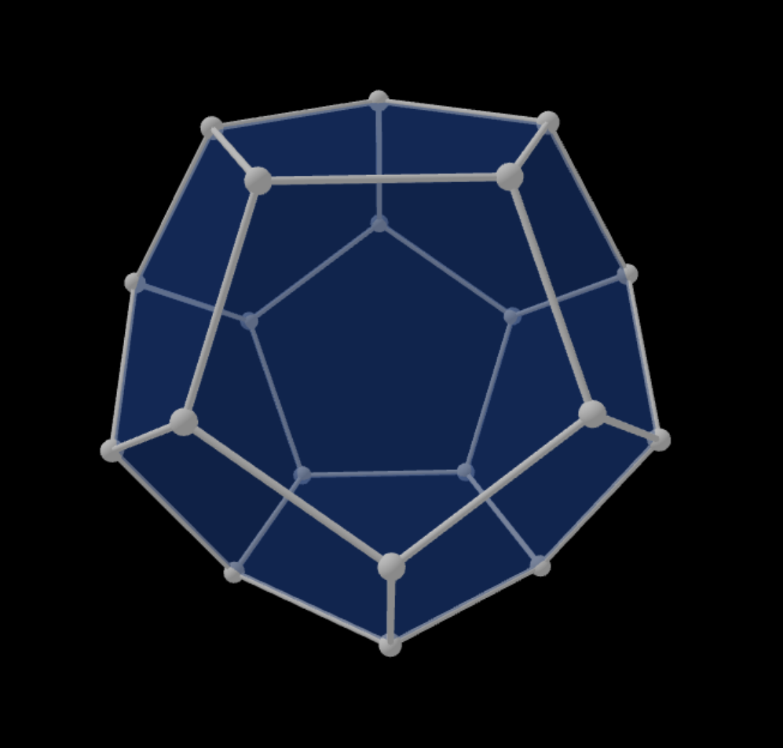

W.T. Tutte: How to draw a graph, Proc. London Math. Soc. 13 (1963), 743-768.
N. Linial, L. Lovász & A. Wigderson: Rubber bands, convex embeddings and graph connectivity, Combinatorica, Vol. 8, 91-102, (1988)
R.L. Brooks, C. A. B. Smith, A. H. Stone, W. T. Tutte: The dissection of rectangles into squares, Duke Math. J. 7 (1940), 312-340.
A graph is planar if it can be drawn in the plane so that the edges are continuous curves that do not intersect each other. Such a drawing is called an embedding of the graph in the plane.
The dodecahedron graph is the graph formed by the vertices and edges of the dodecahedron,
one of the five platonic solids.

A graph is connected if any two of its nodes can be reached from each other on a path.
A graph is k-connected if it is connected and it stays connected if fewer than k of its nodes are deleted. (We assume that the graph has more than k nodes.)
A graph is 3-connected if it is connected and it stays connected if any two of its nodes
are deleted. (We assume that the graph has at least four nodes.)
A cut in a graph is obtained by dividing the nodes into two classes, and taking the edges connecting nodes in different classes.
Brute force in this case means looking at all possible ways of dividing the nodes into
two classes (black and white), counting the edges that go across, and selecting the best.
Working out the physics: the energy of the system is defined by:
where is the position of node in the plane. Taking gradients it is easy to derive the equilibrium condition: every node that is not nailed down must be at the center of gravity of its neighbors. In formula:
and